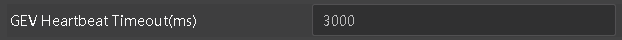
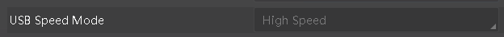

一、问题排查思路
-
基于SDK开发的程序异常，建议先运行MVS客户端，查看相应功能是否正常
-
如果MVS正常，但基于SDK开发的程序异常，需要重点排查二次开发的程序问题
-
如果MVS客户端也异常，请参考以下典型问题的解决方法，看是否能匹配上
-
若根据以上排查思路仍不能解决问题，请记录问题现象或图片、MVS客户端版本号和dll库信息（名称和版本号），联系本公司技术同事获取支持
二、典型问题解决方法
问题原因：网络传输环境异常，导致数据传输丢包。
解决方法：1、保证网络有足够带宽。2、开启网卡巨帧。3、关闭系统防火墙。4、调节SCPD，慢慢调大，直到不丢包为止，如下图:

问题 2：调用sdk执行软触发命令时，软触发命令执行失败。
问题原因：设置触发源不是软触发。
解决方法：调用sdk时，在执行软触发命令时，先保证相机处于软触发模式以及触发源为软触发。
问题原因：网卡休眠或者网口连接处松动。
解决方法：1、设置操作系统的电源选项，使计算机不要进入睡眠状态。2、确认下网口是否松掉了。
问题原因：1、该相机已经被其它程序占用了。2、可能是设置心跳时间过长，而程序没有执行关闭设备或者销毁设备句柄接口，直接异常退出（在调试模式下常见），导致设备一直被占用着。
解决方法：1、检查是否已经有别的程序占用了相机，或者在程序中已经被连接。2、需要等心跳时间到或者插拔下相机电源。
问题原因：调试时会引起心跳发送超时。
解决方法：使用setintvalue值，再opendevice后面调用，加长心跳时间（如30s，及设置值为30000），默认是3s，如下图：

问题原因：在调试状态下，相机的心跳值会被默认设置成60000ms（60s），目的是避免用户在Visual Studio集成开发环境调试状态下心跳发送超时的情况，但会出现调试状态异常关闭后相机无法打开问题。
解决方法：建议客户在退出调试之前先将相机关闭。
问题 8：编译报ld:-lMvCameraControl找不到libMvCameraControl库。
问题原因：安装完成后，当前控制台中会出现环境变量不生效的情况。
解决方法：排查环境变量是否生效，Lib库是否存在。
1）首先确认环境变量中关于SDK的环境变量都生效了
echo $MVCAM_COMMON_RUNENV
如果执行命令没有打印出相应的SDK路径，则需要执行：
cd 安装文件夹路径
source set_env_path.sh
2）如果环境变量没有问题，则找到lib库路径，看库是否存在
问题 9：编译报ld:-lMvCameraControl 不兼容的符号（not compatable symbol）。
问题原因：SDK版本与硬件版本不匹配，或者编译链不支持。
解决方法：
1）确认当前的硬件环境和SDK是对应的版本：
uname -a
cd /opt/MVS/lib/64
readelf -h libMvCameraControl.so
查看SDK的头部信息和系统信息是否是匹配的
2）gcc -v查看gcc版本是否是高于SDK的gcc的。各个SDK的gcc版本为：
x86_64: gcc-4.4.7
i386: gcc-4.4.7
armhf: gcc-4.8.2
aarch64: gcc-4.9.4
arm-none: gcc-4.1.1
如果使用的gcc低于对应的SDK版本，可以使用gcc较高的版本，详情可以咨询本司技术支持。
问题原因：PC端的IP不是静态IP。
解决方法：PC端设置为静态IP，否则Linux无法为自己分配局域网IP地址，导致无法枚举到相机。
问题原因：在linux测试中，有的PC在设置静态ip的情况下，切换到dhcp模式，静态ip仍然存在，这种情况下会出现一个相机枚举到两个；大多数PC在设置静态IP的情况下，切换到dhcp模式，静态ip会删除。
解决方法：删除多余的IP地址。
问题 1：MVS取不到数据，或者帧率远低于实际帧率。
问题原因：相机接在2.0的口上，带宽不足。
解决方法：可以通过以下方式确认相机连接口是USB2.0口还是USB3.0口。
1）设备列表的图标是否显示为2

2）设备属性中的USB Speed Mode属性值是HighSpeed还是SuperSpeed
